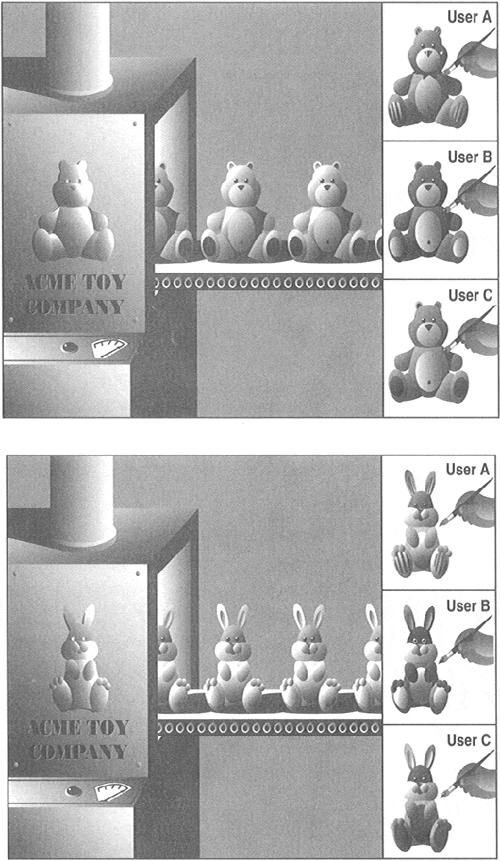

| < BACK | Make Note | Bookmark | CONTINUE > |
Introduction
Before we get into the nitty-gritty of OOP and classes, we begin with a high-level overview, then present some simple examples to get you "warmed up." If you are new to object-oriented programming, you may wish to merely skim this section first, then begin the formal reading in Section 13.2. This section is targeted more to those already familiar with the concepts, who simply want to see "how it's done" in Python.
The main two entities in Python object-oriented programming are classes and class instances (see Figure13-1).
Figure 13.1. The factory manufacturing machines on the left are analogous to classes, while each toy produced are instances of their respective classes. Although each instance has the basic underlying structure, individual attributes like color or feet can be changed—these are similar to instance attributes.
Classes and Instances
Classes and instances are related to each other: classes provide the definition of an object, and instances are "the real McCoy," the objects specified in the class definition brought to life.
Here is an example of how to create a class:
class MyNewObjectType:
'define MyNewObjectType class'
class_suite
The keyword is class, followed by the class name. What follows is the suite of code that defines the class. This usually consists of various definitions and declarations. The process of creating an instance is called instantiation, and it is carried out like this (note the conspicuous absence of a new keyword):
myFirstObject = MyNewObjectType()
The class name is given as an "invocation," using the familiar function operators ( ( ) ). You then typically assign that newly-created instance to a variable. The assignment is not required syntactically, but if you do not save your instance to a variable, it will be of no use and will be automatically garbage-collected because there would no references to that instance. What you would be doing is allocating memory, then immediately deallocating it.
Classes can be as simple or as complicated as you wish them to be. At a very minimum, classes can be used as "namespace containers." By this, we mean that you can store data into variables and group them in such a way that they have all share the same relationship—a named relationship using the standard Python dotted-attribute notation. For example, you may have a class without any inherent attributes and merely use such a class to provide a namespace for data, giving your class characteristics similar to records in Pascal or structures in C, or, in other words, use the class as simply a container object with shared naming.
Here is one example of such a class:
class MyData:
pass
Recall that the pass statement is used where code is required syntactically, but no operation is desired. In this case, the required code is the class suite, but we do not wish to provide one. The class we just defined has no methods or any other attributes. We will now create an instance to use the class simply as a namespace container.
>>> mathObj = MyData() >>> mathObj.x = 4 >>> mathObj.y = 5 >>> mathObj.x + mathObj.y 9 >>> mathObj.x * mathObj.y 20
We could have used variables "x" and "y" to accomplish the same thing, but in our case, mathObj.x and mathObj.y are related by the instance name, mathObj. This is what we mean by using classes as namespace containers. mathObj.x and mathObj.y are known as instance attributes because they are only attributes of their instance object (mathObj), not of the class (MyData).
Methods
One way we can improve our use of classes is to add functions to them. These class functions are known by their more common name, methods. In Python, methods are defined as part of the class definition, but can be invoked only by an instance. In other words, the path one must take to finally be able to call a method goes like this: (1) define the class (and the methods), (2) create an instance, and finally, (3) invoke the method from that instance. Here is an example class with a method:
class MyDataWithMethod: # define the class
def printFoo(self): # define the method
print 'You invoked printFoo()!'
You will notice the self argument, which must be present in all method invocations. That argument, representing the instance object, is passed to the method implicitly by the interpreter when you invoke a method via an instance, so you, yourself, do not have to worry about passing anything in. Now we will instantiate the class and invoke the method once we have an instance:
>>> myObj = MyDataWithMethod() # create the instance >>> myObj.printFoo() # now invoke the method You invoked printFoo()!
We conclude this introductory section by giving you a slightly more complex example of what you can do with classes (and instances) and also introducing you to the special method __init__() as well as subclassing and inheritance.
For those of you who are already familiar with object-oriented programming, __init__() is the class constructor. If you are new to the world of OOP, a constructor is simply a special method which is called during instantiation that defines additional behavior that should occur when a class is instantiated, i.e., setting up initial values or running some preliminary diagnostic code—basically performing any special tasks or setup after the instance is created but before it is returned from the instantiation call.
(We will add print statements to our methods to better illustrate when certain methods are called. It is generally not typical to have input or output statements in functions unless output is a predetermined characteristic of the body of code.)
Creating a Class (Class Definition)
class AddrBookEntry: # class definition
'address book entry class'
def __init__(self, nm, ph): # define constructor
self.name = nm # set inst .attr .1
self.phone = ph # set inst .attr .2
print 'Created instance for:', self.name
def updatePhone(self, newph): # define method
self.phone = newph
print 'Updated phone# for:', self.name
In the definition for the AddrBookEntry class, we define two methods: __init__() and updatePhone(). __init__() is called when instantiation occurs, that is, when AddrBookEntry() is invoked. You can think of such an instantiation call to be an implicit call to __init__() because the arguments given in the call to AddrBookEntry() are exactly the same as those that are received by __init__().
Recall that the self (instance object) argument is passed in automatically by the interpreter when the method is invoked from an instance, so in our __init__() above, the only required arguments are nm and ph, representing the name and telephone number, respectively. __init__() sets these two instance attributes on instantiation so that they are available to the programmer by the time the instance is returned from the instantiation call.
As you may have surmised, the purpose of the updatePhone() method is to replace an address book entry's telephone number attribute.
Creating Instances (Instantiation)
>>> john = AddrBookEntry('John Doe', '408-555-1212')
Created instance for: John Doe
>>> jane = AddrBookEntry('Jane Doe', '650-555-1212')
Created instance for: Jane Doe
These are our instantiation calls which, in turn, invoke __init__(). Recall that an instance object is passed in automatically as self. So in your head, you can replace self in methods with the name of the instance. In the first case, when object john is instantiated, it is john.name that is set, as you can confirm below.
Also, without the presence of default arguments, both parameters to __init__() are required as part of the instantiation invocation.
Accessing Instance Attributes
>>> john <__main__.AddrBookEntry instance at 80ee610> >>> john.name 'John Doe' >>> john.phone '408-555-1212' >>> jane.name 'Jane Doe' >>> jane.phone '650-555-1212'
Once our instance was created, we can confirm that our instance attributes were indeed set by __init__() during instantiation. Calling the instance within the interpreter tells us what kind of object it is. (We will discover later how we can customize our class so that rather than seeing the default <…> Python object string, a more desired output can be customized.)
Method Invocation (via Instance)
>>> john.updatePhone('415-555-1212')
Updated phone# for: John Doe
>>> john.phone
'415-555-1212'
The updatePhone() method requires one explicit argument: the new phone number. We check our instance attribute right after the call to updatePhone(), making sure that it did what was advertised.
So far, we have invoked only a method via an instance, as in the above example. These are known as bound methods in Python. Binding is just a Python term to indicate whether we have an instance to invoke a method.
Creating a Subclass
Subclassing with inheritance is a way to create and customize a new class type with all the features of an existing class but without modifying the original class definition. The new subclass can be customized with special functionality unique only to that new class type. Aside from its relationship to its parent or base class, a subclass has all the same features as any regular class and is instantiated in the same way as all other classes. Note below that a parent class is part of the subclass declaration:
class AddrBookEntryWithEmail(AddrBookEntry): # define subclass
'update address book entry class'
def __init__(self, nm, ph, em): # new __init__
AddrBookEntry.__init__(self, nm, ph) # base class cons.
self.email = em
def updateEmail(self, newem): # define method
self.email = newem
print 'Updated e-mail address for:', self.name
We will now create our first subclass, AddrBookEntryWithEmail. In Python, when classes are derived, subclasses inherit the base class attributes, so in our case, we will not only define the methods __init__() and updateEmail(), but AddrBookEntryWithEmail will also inherit the updatePhone() method from AddrBookEntry.
Each subclass must define its own constructor if desired, otherwise, the base class constructor will be called. However, if a subclass overrides a base class constructor, the base class constructor will not be called automatically—such a request must be made explicitly as we have above. For our subclass, we make an initial call to the base class constructor before performing any "local" tasks, hence the call to AddrBookEntry.__init__() to set the name and phone number. Our subclass sets one additional instance attribute, the e-mail address, which is set by the remaining line of our constructor.
Note how we have to explicitly pass the self instance object to the base class constructor because we are not invoking that method from an instance. We are invoking that method from an instance of a subclass. Because we are not invoking it via an instance, this unbound method call requires us to pass an acceptable instance (self) to the method.
We close out this section with examples of how to create an instance of the subclass, accessing its attributes, and invoking its methods, including those inherited from the parent class.
Using a Subclass
>>> john = AddrBookEntryWithEmail('John Doe, '408-555-
1212', 'john@spam.doe')
Created instance for: John Doe
>>> john
<__main__.AddrBookEntryWithEmail instance at 80ef6f0>
>>> john.name
'John Doe'
>>> john.phone
'408-555-1212'
>>> john.email
'john@spam.doe'
>>> john.updatePhone('415-555-1212')
Updated phone# for: John Doe
>>> john.phone
'415-555-1212'
>>> john.updateEmail('john@doe.spam')
Updated e-mail address for: John Doe
>>> john.email
'john@doe.spam'
NOTE
Class names traditionally being with a capital letter. This is the standard convention that will help you identify classes, especially during instantiation (which would look like a function call otherwise). In particular, data attributes should sound like data value names, and methods names should indicate action towards a specific object or value. Another way to phrase this is: Use nouns for data value names and predicates (verbs plus direct objects) for methods. The data items are the objects you, the programmer, are acting on, and the methods should indicate what action the programmer wants to perform on the object.
In the classes we defined above, we attempted to follow this guideline, with data values such as "name," "phone," and "email," and actions such as "updatePhone" and "updateEmail." Other good examples for values include "data," "amount," or "balance;" some recommended method names include "getValue," "setValue," and "clearDataset." Classes should also be well named; some of those good names include "AddrBookEntry," "RepairShop," etc.
We hope that you now have some understanding of how object-oriented programming is accomplished using Python. The remaining sections of this chapter will take you deeper into all the facets of object-oriented programming and Python classes and instances.
| Last updated on 9/14/2001 Core Python Programming, © 2002 Prentice Hall PTR |
| < BACK | Make Note | Bookmark | CONTINUE > |